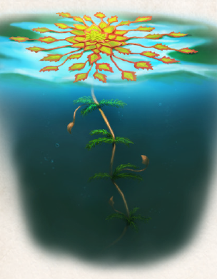

Die Wassernuss ist eine sommergrüne einjährige Pflanze, die in stehenden Gewässern, Brackwasser, ja sogar Schlammseen südlich der Linie Perricum-Havena gedeiht. Ihre Blätter tauchen erst ab Rahja auf und im Praios und Rondra zeigen sie ihre unscheinbaren weißen Blüten. Ab Travia verfärben sich die Blätter gelbgrün mit rostroten Rändern, ehe sie absterben. Aus den Blüten entwickelt sich eine dunkelbraune hartschalige Frucht mit zwei, häufig auch vier Enden, die jeweils in sehr spitzen, mit Widerhaken besetzten Dornen auslaufen. Diese Form soll gewährleisten, dass die Nüsse sich im Seegrund verankern und keimen. Allerdings sind sie auch der Grund für ihre Beliebtheit bei jenen Zeitgenossen, die keinen Wert auf Verfolger legen. So hart und so spitz sind die etwa einen halben bis ganzen Finger durchmessenden Nüsse, dass sie mühelos durch die Sohlen leichter Sandalen dringen und sich schmerzhaft in die Fußsohle bohren. Gerade auf Maraskan und bei den nördlichen Waldmenschenstämmen ist diese Nutzung weit verbreitet, in Aranien dient sie eher albernen Streichen und flüchtigen Kleinkriminellen.
Darüber hinaus ist die auch Wasserkastanie, Traben oder Schwimmende Stachelnuss genannte Pflanze im Land der Ersten Sonne ein geschätztes Lebensmittel, denn der weiße Kern der Nuss ist essbar und sehr nahrhaft, allerdings erst nachdem er gegart wurde, denn roh genossen ist er leicht giftig und überträgt recht häufig Parasiten wie Darmwürmer. Wurzel und Blätter werden zudem gerne zur Beförderung der Menstruation und Nachgeburt eingesetzt.
Alternative Namen: Wasserkastanie, Traben, Schwimmende Stachelnuss
Verbreitung:
Landschaftstyp: Sümpfe, Marschen und Moore
Regionen: Südliche Feuchtländer, gewöhnlich in Aranien, gelegentlich überall südlich der Linie Perricum-Havena
Suchschwierigkeit: -1
Bestimmungsschwierigkeit: -1
Anwendungen: 1/2/3/4/5/6
Wirkung:
Roh:
Berührung: keine
Einatmung: keine
Verzehr: leicht giftig (Stufe 1, Wirkung: 1W3 SP, Dauer: sofort), Parasitengefahr
Verarbeitet: siehe Rezepte
Preis: 2 / 8 Silbertaler
Rezepte:
noch keine bekannt
Pflanzliche Hilfsmittel: Krähenfüße
Alltagsarzneien und Volksbrauchtum: Mittel gegen Menstruationsleiden (Wurzel, Blätter); In Aranien stark verbreitet, um Haus und Hof mit Krähenfüßen vor Einbrechern zu schützen
Haltbarkeit:
Roh: siehe Haltbarmachung